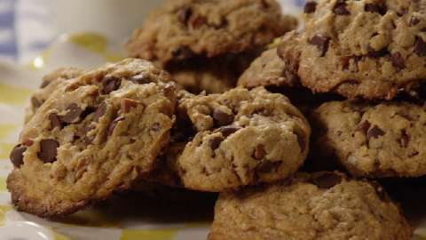

The Best Chocolate Chip Cookies
The Best Chocolate Chip Cookies
The Best Chocolate Chip Cookies
The Best Chocolate Chip Cookies
The Best Chocolate Chip Cookies

Recipe by: Granny
Prep time
45 minutes
Ingredients
- 1/2 cup (1 stick) unsalted butter
- 3/4 cup packed dark brown sugar
- 3/4 cup sugar
- 2 large eggs
- 1 teaspoon pure vanilla extract
- 1 (12-ounce) bag semisweet chocolate chips, or chunks
- 2 1/4 cups all-purpose flour
- 3/4 teaspoon baking soda
Steps
- Evenly position 2 racks in the middle of the oven and preheat to 375 degrees F. (on convection setting if you have it.) Line 2 baking sheets with parchment paper or silicone sheets. (If you only have 1 baking sheet, let it cool completely between batches.)
- Put the butter in a microwave safe bowl, cover and microwave on medium power until melted. (Alternatively melt in a small saucepan.) Cool slightly. Whisk the sugars, eggs, butter and vanilla in a large bowl until smooth.
- Whisk the flour, baking soda and salt in another bowl. Stir the dry ingredients into the wet ingredients with a wooden spoon; take care not to over mix. Stir in the chocolate chips or chunks.
- Scoop heaping tablespoons of the dough onto the prepared pans. Wet hands slightly and roll the dough into balls. Space the cookies about 2-inches apart on the pans. Bake, until golden, but still soft in the center, 12 to 16 minutes, depending on how chewy or crunchy you like your cookies. Transfer hot cookies with a spatula to a rack to cool. Serve.
- Store cookies in a tightly sealed container for up to 5 days.
Nutrition Information
These cookies are delicious, but you better watch out the amount you eat. A minute in your lips, forever in your hips!
Recipe modified from Betty Croker.
